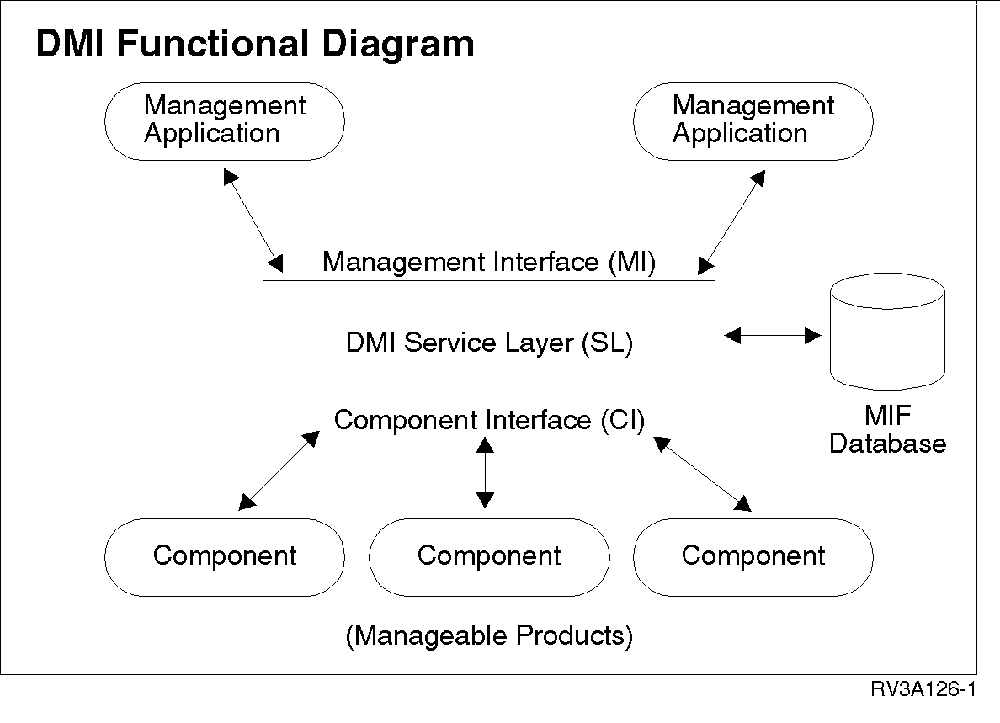

<HTML>
<HEAD>
<TITLE>DMI Structure</TITLE>
</HEAD>
<BODY>
<H1>DMI Structure</H1><!-- entering slot 137 -->
<P>
The DMI is a local interface for single-system use, regardless of being
a standalone desktop system or part of a network.  The interface consists
of the following parts:<!-- lm: 0x2 3 -->
<UL>
<P>
<LI><!-- lm: 0x2 6 -->Service Layer (SL):  A local program that collects
and manages product information in the MIF database.  The Service Layer
distributes requested information to management applications through the
Management Interface (MI) and to manageable products through the Component
Interface (CI).<!-- lm: 0x2 3 -->
<P>
<LI><!-- lm: 0x2 6 -->MIF database:  The database containing the installed
or attached manageable product information.  MIF files contain the information,
and the Service Layer manages the information.<!-- lm: 0x2 3 -->
<P>
<LI><!-- lm: 0x2 6 -->Management applications: Remote or local programs
used to interrogate, track, control, and list the elements of a desktop
system. A management application can be any of the following:<!-- lm: 0x2 8 -->
<UL>
<P>
<LI><!-- lm: 0x2 11 -->a graphical user interface program<!-- lm: 0x2 8 -->
<BR>
<LI><!-- lm: 0x2 11 -->a network management agent<!-- lm: 0x2 8 -->
<BR>
<LI><!-- lm: 0x2 11 -->an installer program<!-- lm: 0x2 8 -->
<BR>
<LI><!-- lm: 0x2 11 -->a diagnostics program<!-- lm: 0x2 8 -->
<BR>
<LI><!-- lm: 0x2 11 -->a remote procedure call.<!-- lm: 0x2 6 --><!-- lm: 0x2 3 -->
</UL> <!-- lm: 0x2 6 -->
<UL>Manageable
products:  Components that are connected to or part of a desktop computer
system or network server.  Components can be part of the system code, or
you can add them later.  Each product has a MIF file in the MIF database
that contains pertinent product management information.<!-- lm: 0x2 1 -->
</UL>
<P>
The following figure shows the DMI structure: DMIFunctionalDiagram
<BR>
<!-- Unable to decode bitmap format -->

<P><HR>

<A HREF="130_L2_DMIOverview.html">[Back: DMI Overview]</A> <BR>
<A HREF="132_L2_EnablingManageablePr.html">[Next: Enabling Manageable Products for DMI]</A> 
</BODY>
</HTML>
